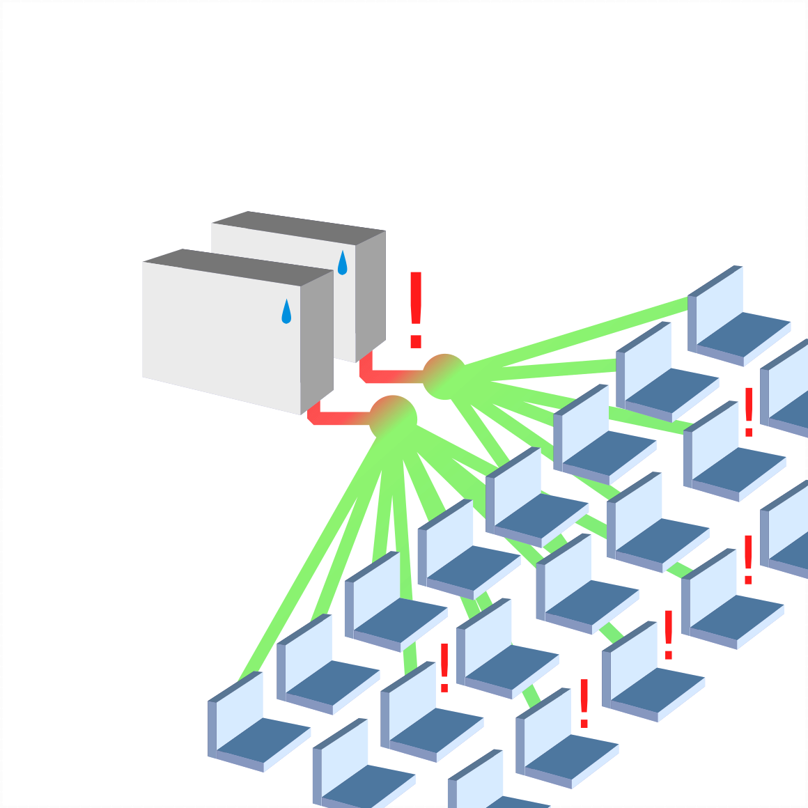
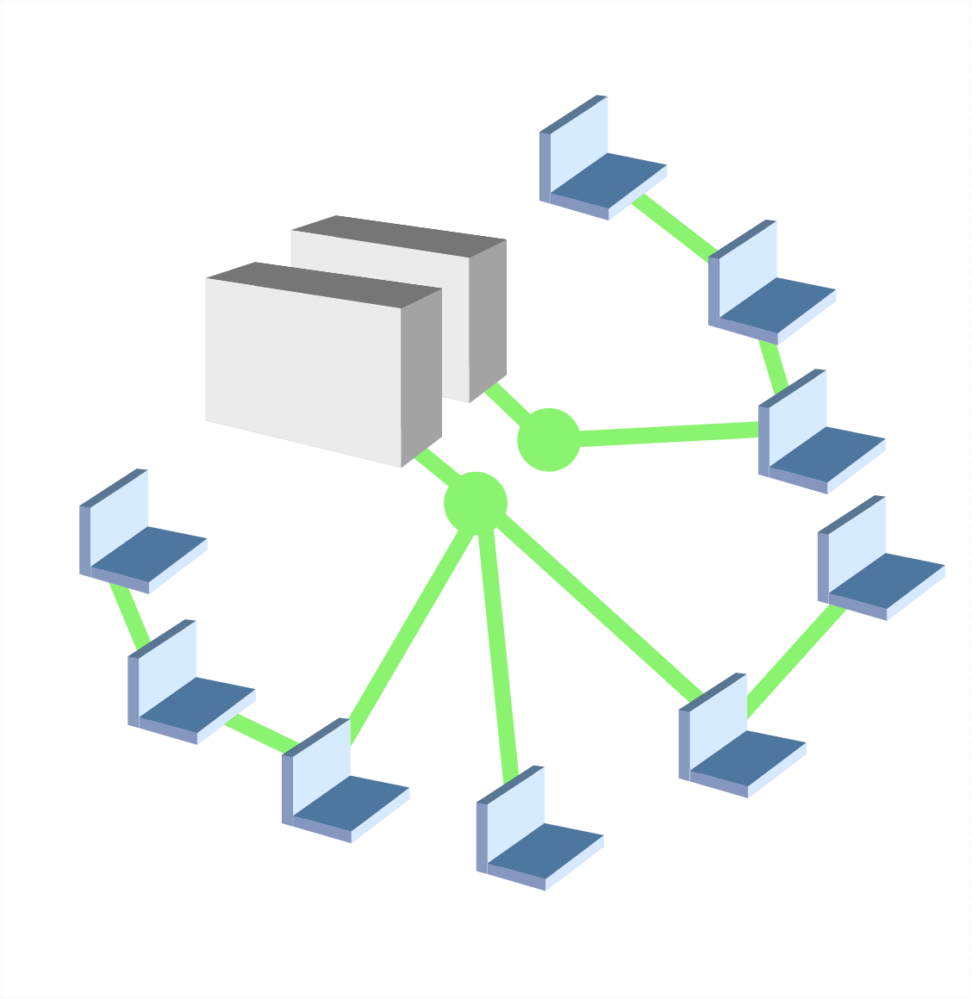
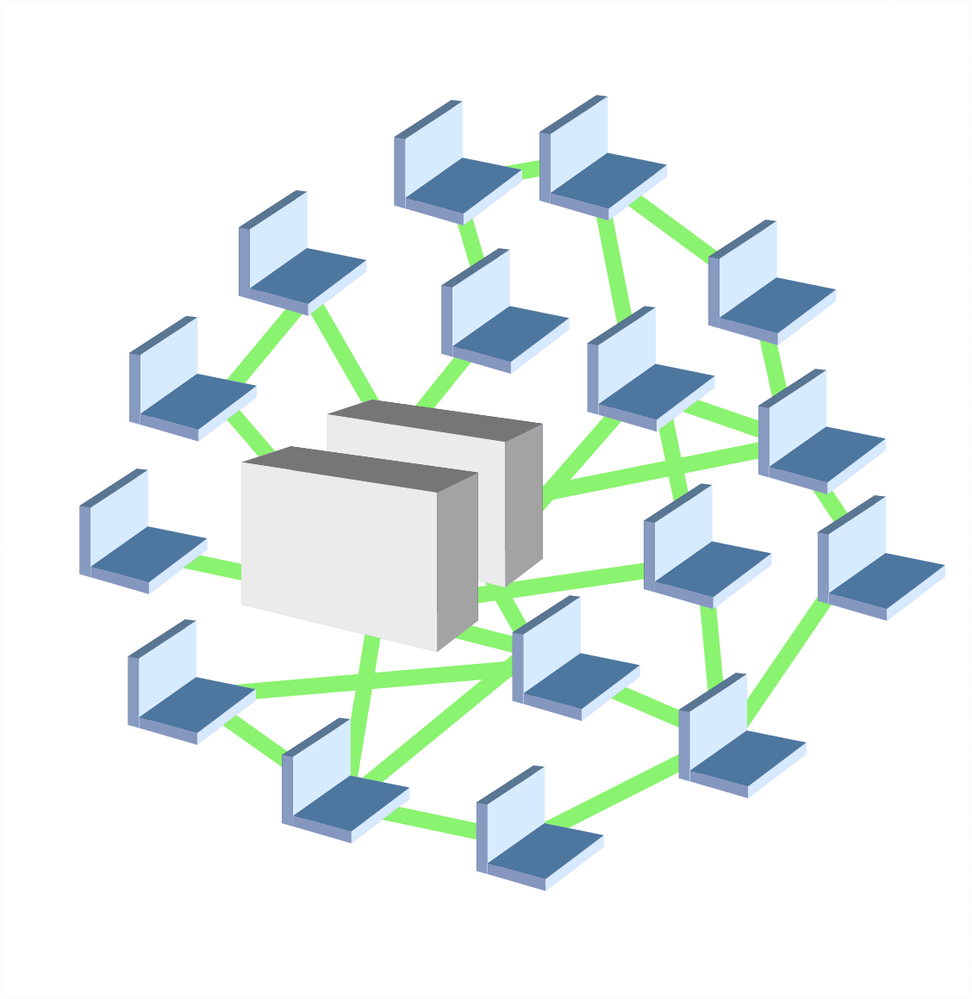

What it's all about
Internet was designed to be distributed.

The way internet works currently is not escalable
Currently traffic is centralized on the servers and ISP gateways, that are hard to manage, maintain and many times run out of capacity.

Internet W3C standards have evolved so we can do it better.
Now any browser can act as a server to other browsers, so content can now be delivered even if the main server is completely down, just by getting it from the users who alrelady received it.

A faster and more reliable Internet for everyone!
Getting content that is just some kilometers from you (specially when it's on your same network) is always faster than to get it from the other side of the world.